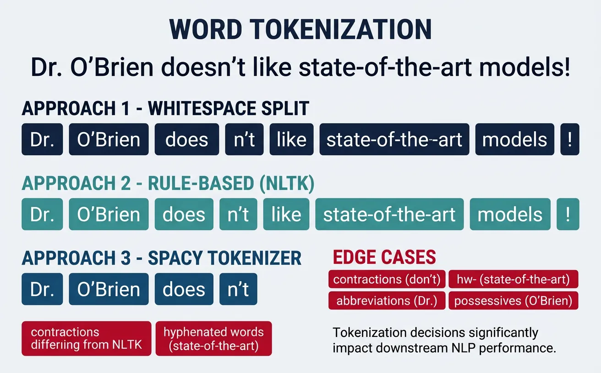
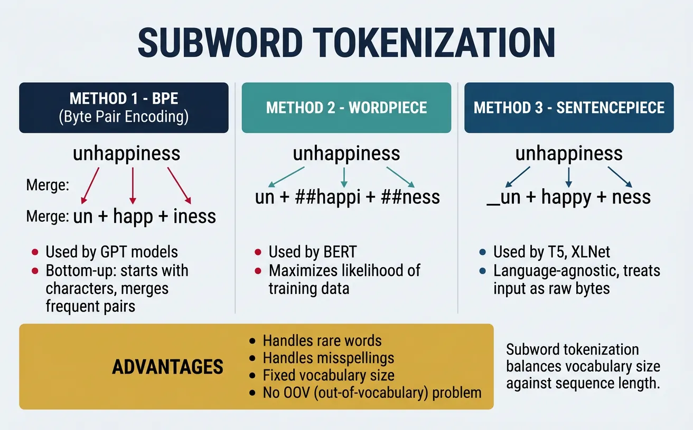
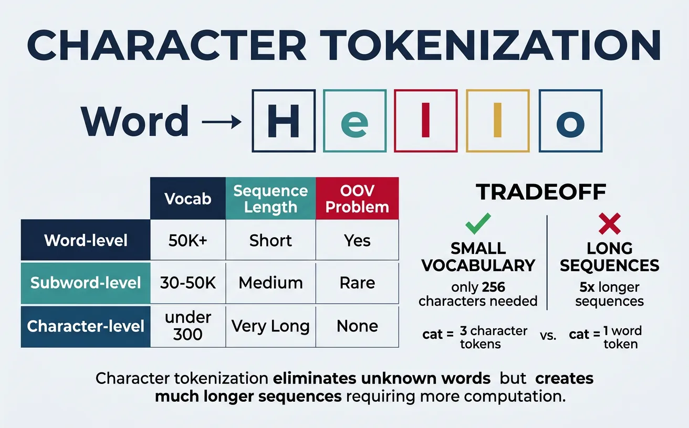
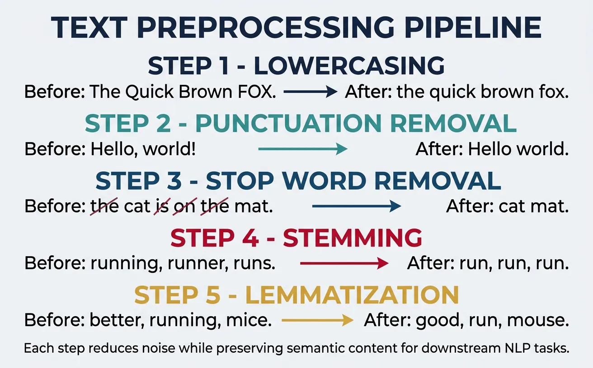
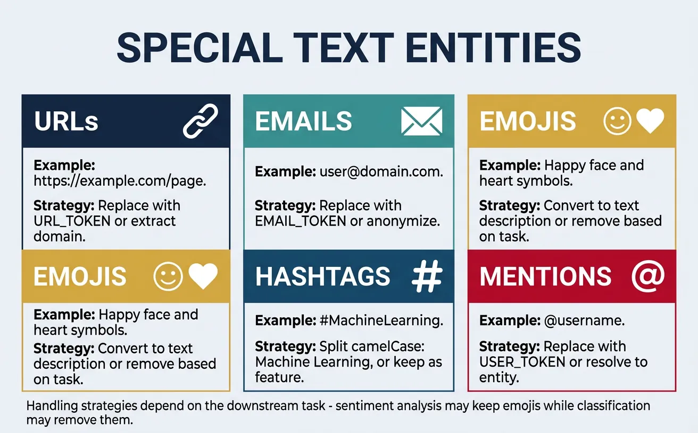

Introduction to Tokenization
Tokenization is the first step in any NLP pipeline—converting raw text into discrete units (tokens) that models can process. In this second part of our series, we'll explore different tokenization strategies and text cleaning techniques.
Key Insight
The choice of tokenization strategy directly impacts model performance. Subword tokenization (BPE, WordPiece) has become the standard for modern neural models.
NLP Mastery
NLP Fundamentals & Linguistic Basics
Phonology, morphology, syntax, semantics, pragmaticsTokenization & Text Cleaning
Subword tokenization, BPE, stopwords, normalizationText Representation & Feature Engineering
Bag-of-words, TF-IDF, feature extraction, vectorizationWord Embeddings
Word2Vec, GloVe, FastText, embedding spaces, analogiesStatistical Language Models & N-grams
Probability chains, smoothing, perplexity, Markov modelsNeural Networks for NLP
Feedforward nets, backpropagation, activation functionsRNNs, LSTMs & GRUs
Sequence modeling, vanishing gradients, gated architecturesTransformers & Attention Mechanism
Self-attention, multi-head attention, positional encodingPretrained Language Models & Transfer Learning
BERT, RoBERTa, fine-tuning, feature extractionGPT Models & Text Generation
Autoregressive generation, prompting, GPT architectureCore NLP Tasks
NER, POS tagging, sentiment analysis, text classificationAdvanced NLP Tasks
Question answering, summarization, machine translationMultilingual & Cross-lingual NLP
mBERT, XLM-R, zero-shot transfer, language diversityEvaluation, Ethics & Responsible NLP
BLEU, ROUGE, bias detection, fairness, responsible AINLP Systems, Optimization & Production
Model serving, quantization, distillation, deploymentCutting-Edge & Research Topics
LLMs, multimodal NLP, reasoning, emerging researchWord Tokenization
Word tokenization is the process of splitting text into individual words or word-like units. This is often the first step in traditional NLP pipelines, transforming a continuous string of characters into a sequence of meaningful tokens. The quality of tokenization directly impacts downstream tasks like part-of-speech tagging, named entity recognition, and sentiment analysis.
While the concept seems simple—"just split on spaces"—real-world text is far more complex. Consider contractions ("don't" ? "do" + "n't"?), hyphenated words ("state-of-the-art"), possessives ("John's"), and punctuation handling. Different tokenizers make different decisions about these edge cases, and the "right" choice depends on your specific application and downstream model.

Modern NLP has largely moved toward subword tokenization for neural models, but word tokenization remains essential for many traditional ML approaches, linguistic analysis, and as a preprocessing step before subword tokenization. Understanding word tokenization fundamentals helps you make informed decisions about your text processing pipeline.
Whitespace Tokenization
The simplest tokenization approach is splitting on whitespace characters (spaces, tabs, newlines). While naive, this baseline method is surprisingly effective for many applications and serves as a fast, language-agnostic starting point. It's commonly used in information retrieval systems and quick text analysis tasks.
However, whitespace tokenization has significant limitations: it doesn't separate punctuation from words ("hello," vs "hello"), struggles with languages that don't use spaces (Chinese, Japanese, Thai), and mishandles contractions and possessives. For production NLP systems, you'll typically need more sophisticated approaches.
Whitespace Tokenization Example
# Whitespace Tokenization - Simple but limited
text = "Hello, world! How are you doing today? I'm learning NLP."
# Method 1: Python's built-in split()
basic_tokens = text.split()
print("Basic split():")
print(basic_tokens)
# Output: ['Hello,', 'world!', 'How', 'are', 'you', 'doing', 'today?', "I'm", 'learning', 'NLP.']
# Method 2: split on specific characters
import re
whitespace_tokens = re.split(r'\s+', text)
print("\nRegex whitespace split:")
print(whitespace_tokens)
# Method 3: Handle multiple whitespace types
text_with_tabs = "Hello\tworld\nHow are you"
clean_tokens = text_with_tabs.split()
print("\nHandling tabs and multiple spaces:")
print(clean_tokens)
# Output: ['Hello', 'world', 'How', 'are', 'you']
# Limitation: Punctuation stays attached
print("\nNote: 'Hello,' includes the comma!")
When to Use Whitespace Tokenization
Whitespace tokenization is suitable for quick prototyping, baseline comparisons, and applications where punctuation handling isn't critical. For production systems, always use a proper tokenizer like NLTK or spaCy that handles edge cases correctly.
Regex-Based Tokenization
Regular expressions (regex) provide powerful pattern matching for custom tokenization rules. By defining explicit patterns for what constitutes a token, you gain fine-grained control over how text is split. This approach is particularly useful when you have domain-specific tokenization requirements that standard libraries don't handle well.
Regex tokenization lets you handle punctuation, special characters, and complex patterns in a single pass. You can define patterns to extract words, numbers, email addresses, URLs, and other entities simultaneously. The trade-off is complexity—regex patterns can become difficult to maintain and may have performance implications for very large texts.
Regex-Based Tokenization
# Regex-Based Tokenization - Full control over patterns
import re
text = "Hello, world! Email me at john@example.com. Price: $99.99 #NLP"
# Pattern 1: Split on non-word characters
pattern1 = r'\W+'
tokens1 = re.split(pattern1, text)
print("Split on non-word chars:")
print([t for t in tokens1 if t]) # Filter empty strings
# Output: ['Hello', 'world', 'Email', 'me', 'at', 'john', 'example', 'com', ...]
# Pattern 2: Extract word-like tokens (more nuanced)
pattern2 = r'\b\w+\b'
tokens2 = re.findall(pattern2, text)
print("\nExtract word tokens:")
print(tokens2)
# Output: ['Hello', 'world', 'Email', 'me', 'at', 'john', 'example', 'com', ...]
# Pattern 3: Preserve emails, numbers, hashtags, and words
complex_pattern = r'''
\b[A-Za-z0-9._%+-]+@[A-Za-z0-9.-]+\.[A-Z|a-z]{2,}\b | # Email
\$?\d+\.?\d* | # Numbers/prices
\#\w+ | # Hashtags
\b\w+\b # Words
'''
tokens3 = re.findall(complex_pattern, text, re.VERBOSE)
print("\nComplex pattern (emails, prices, hashtags):")
print(tokens3)
# Output: ['Hello', 'world', 'Email', 'me', 'at', 'john@example.com', 'Price', '$99.99', '#NLP']
Practical: Custom Tokenizer for Social Media
Social media text requires special handling for mentions, hashtags, URLs, and emojis:
# Social Media Tokenizer
import re
tweet = "Hey @john! Check out https://example.com ?? #AI #MachineLearning is amazing! ??"
# Comprehensive social media pattern
social_pattern = r'''
https?://[^\s]+ | # URLs
@\w+ | # Mentions
\#\w+ | # Hashtags
[\U0001F600-\U0001F64F] | # Emoticons
[\U0001F300-\U0001F5FF] | # Misc Symbols
[\U0001F680-\U0001F6FF] | # Transport/Map
\b\w+\b | # Words
[!?]+ # Punctuation clusters
'''
tokens = re.findall(social_pattern, tweet, re.VERBOSE)
print("Social media tokens:")
for i, token in enumerate(tokens):
print(f" {i+1}. '{token}'")
# Output preserves @mentions, #hashtags, URLs, and emojis as single tokens
NLTK & spaCy Tokenizers
NLTK (Natural Language Toolkit) and spaCy are the two most popular NLP libraries in Python, each offering robust tokenization. NLTK provides multiple tokenizer options with different trade-offs, while spaCy offers a single, highly optimized tokenizer designed for production use. Both handle contractions, punctuation, and special cases far better than simple regex approaches.
NLTK's word_tokenize() uses the Penn Treebank tokenization standard, which separates contractions ("don't" ? "do", "n't") and handles punctuation intelligently. spaCy's tokenizer is rule-based with customizable exceptions and achieves excellent performance through Cython optimization. For most applications, spaCy is faster and more suitable for production, while NLTK is better for learning and experimentation.
NLTK Tokenization
# NLTK Tokenization - Multiple options
import nltk
nltk.download('punkt', quiet=True)
nltk.download('punkt_tab', quiet=True)
from nltk.tokenize import word_tokenize, sent_tokenize, TreebankWordTokenizer
from nltk.tokenize import RegexpTokenizer
text = "Dr. Smith's presentation wasn't boring! It covered NLP, ML, and AI. What do you think?"
# Sentence tokenization
sentences = sent_tokenize(text)
print("Sentences:")
for i, sent in enumerate(sentences, 1):
print(f" {i}. {sent}")
# Word tokenization (Penn Treebank style)
words = word_tokenize(text)
print("\nWord tokens (NLTK):")
print(words)
# Note: "wasn't" becomes "was" + "n't", "Smith's" becomes "Smith" + "'s"
# TreebankWordTokenizer explicitly
treebank = TreebankWordTokenizer()
tb_tokens = treebank.tokenize(text)
print("\nTreebank tokens:")
print(tb_tokens)
spaCy Tokenization
# spaCy Tokenization - Fast, production-ready
import spacy
# Load English model (run: python -m spacy download en_core_web_sm)
nlp = spacy.load("en_core_web_sm")
text = "Dr. Smith's presentation wasn't boring! It covered NLP, ML, and AI. What do you think?"
# Process text
doc = nlp(text)
# Extract tokens
print("spaCy tokens:")
for token in doc:
print(f" '{token.text}' - POS: {token.pos_}, Lemma: {token.lemma_}")
# Token-level information available
print("\nToken attributes:")
for token in doc:
if not token.is_space:
print(f" {token.text:12} | is_alpha: {token.is_alpha} | is_punct: {token.is_punct} | is_stop: {token.is_stop}")
NLTK vs spaCy: When to Use Which
Choose NLTK when you need educational tools, multiple algorithm options, or are working on research. Choose spaCy for production systems, when speed matters, or when you need an integrated NLP pipeline (tokenization + POS + NER in one pass).
Subword Tokenization
Subword tokenization represents a fundamental shift in how we process text for neural models. Instead of treating whole words as atomic units (which creates massive vocabularies and out-of-vocabulary problems) or individual characters (which loses semantic meaning), subword methods find a middle ground by breaking words into meaningful subunits.
The key insight is that many words share common prefixes, suffixes, and roots. By learning these recurring patterns, subword tokenizers can represent any word—including rare and novel words—using a fixed vocabulary of subword units. This is why modern language models like GPT, BERT, and T5 all use subword tokenization. The three main algorithms are Byte Pair Encoding (BPE), WordPiece, and Unigram/SentencePiece.

Byte Pair Encoding (BPE)
Byte Pair Encoding, originally a data compression algorithm, was adapted for NLP by Sennrich et al. (2016). BPE iteratively merges the most frequent pair of adjacent tokens in the training corpus, starting from individual characters. After many iterations, common words remain whole while rare words are split into subwords. The number of merge operations determines vocabulary size.
BPE is used by GPT-2, GPT-3, GPT-4, RoBERTa, and many other models. Its popularity stems from its simplicity, effectiveness, and ability to handle any text including rare words, typos, and foreign words by falling back to character-level tokens when needed.
BPE Algorithm: Step-by-Step Demonstration
# Understanding BPE: Step-by-step demonstration
# This shows the algorithm conceptually
def simple_bpe_demo():
"""Demonstrate BPE algorithm concept."""
# Initial corpus (word frequencies)
corpus = {
'low': 5,
'lower': 2,
'newest': 6,
'widest': 3
}
# Step 1: Start with character vocabulary + end-of-word symbol
print("Step 1: Initial character-level representation")
char_corpus = {}
for word, freq in corpus.items():
chars = ' '.join(list(word)) + ' ' # marks word boundary
char_corpus[chars] = freq
print(f" '{word}' ({freq}x) ? '{chars}'")
# Step 2: Count adjacent pairs
print("\nStep 2: Count bigram pairs")
pairs = {}
for word, freq in char_corpus.items():
symbols = word.split()
for i in range(len(symbols) - 1):
pair = (symbols[i], symbols[i+1])
pairs[pair] = pairs.get(pair, 0) + freq
# Show top pairs
sorted_pairs = sorted(pairs.items(), key=lambda x: -x[1])
for pair, count in sorted_pairs[:5]:
print(f" {pair}: {count}")
print("\nStep 3: Merge most frequent pair ('e', 's') ? 'es'")
print("Step 4: Repeat until desired vocabulary size reached")
simple_bpe_demo()
BPE with Hugging Face Tokenizers
# Using BPE with Hugging Face Tokenizers
from tokenizers import Tokenizer
from tokenizers.models import BPE
from tokenizers.trainers import BpeTrainer
from tokenizers.pre_tokenizers import Whitespace
# Create a BPE tokenizer from scratch
tokenizer = Tokenizer(BPE(unk_token="[UNK]"))
tokenizer.pre_tokenizer = Whitespace()
# Training data (in practice, use large corpus)
training_data = [
"Machine learning is transforming technology.",
"Deep learning models learn representations automatically.",
"Transformers revolutionized natural language processing.",
"Neural networks can learn complex patterns."
]
# Save to temporary files for training
import tempfile
import os
with tempfile.NamedTemporaryFile(mode='w', suffix='.txt', delete=False) as f:
f.write('\n'.join(training_data))
temp_file = f.name
# Train tokenizer
trainer = BpeTrainer(vocab_size=100, special_tokens=["[UNK]", "[PAD]", "[CLS]", "[SEP]"])
tokenizer.train([temp_file], trainer)
# Test tokenization
test_text = "Transformers learn representations"
encoding = tokenizer.encode(test_text)
print(f"Text: '{test_text}'")
print(f"Tokens: {encoding.tokens}")
print(f"Token IDs: {encoding.ids}")
# Cleanup
os.unlink(temp_file)
Using GPT-2's BPE Tokenizer
# GPT-2 BPE Tokenizer via Hugging Face
from transformers import GPT2Tokenizer
# Load pre-trained tokenizer
tokenizer = GPT2Tokenizer.from_pretrained('gpt2')
# Example texts
texts = [
"Hello, world!",
"Tokenization is fundamental to NLP.",
"Pneumonoultramicroscopicsilicovolcanoconiosis", # Longest English word
"transformers revolutionized NLP"
]
for text in texts:
tokens = tokenizer.tokenize(text)
ids = tokenizer.encode(text)
print(f"\nText: '{text}'")
print(f"Tokens ({len(tokens)}): {tokens}")
print(f"IDs: {ids}")
# Decode back
decoded = tokenizer.decode(ids)
print(f"Decoded: '{decoded}'")
BPE Training Simulation: Step by Step
Let's train a BPE tokenizer on a tiny corpus of 4 words. Watch how the algorithm iteratively merges the most frequent pair of adjacent tokens at each step.
Training Corpus: "low" (×5), "lower" (×2), "newest" (×6), "widest" (×3)
Step 0: Character Initialization
Split every word into individual characters and add a special end-of-word marker </w>:
| Word | Frequency | Character Tokens |
|---|---|---|
| low | 5 | l o w </w> |
| lower | 2 | l o w e r </w> |
| newest | 6 | n e w e s t </w> |
| widest | 3 | w i d e s t </w> |
Initial Vocabulary (12): d, e, i, l, n, o, r, s, t, w, </w>
Step 1: Count Pairs → Merge (e, s) → es
Count every adjacent pair across the corpus (weighted by word frequency):
| Pair | Count | |
|---|---|---|
| (e, s) | 9 | 🏆 newest (6) + widest (3) |
| (s, t) | 9 | newest (6) + widest (3) — tie, but (e,s) found first |
| (l, o) | 7 | low (5) + lower (2) |
| (o, w) | 7 | low (5) + lower (2) |
| (t, </w>) | 9 | newest (6) + widest (3) |
| (w, </w>) | 5 | low (5) |
Merge (e, s) → es. Updated corpus:
| Word | Tokens After Merge |
|---|---|
| low (×5) | l o w </w> |
| lower (×2) | l o w e r </w> |
| newest (×6) | n e w es t </w> |
| widest (×3) | w i d es t </w> |
Vocabulary (13): d, e, i, l, n, o, r, s, t, w, </w>, es
Step 2: Merge (es, t) → est
New top pair (es, t) = 9 (newest 6 + widest 3). Merge:
| Word | Tokens After Merge |
|---|---|
| low (×5) | l o w </w> |
| lower (×2) | l o w e r </w> |
| newest (×6) | n e w est </w> |
| widest (×3) | w i d est </w> |
Vocabulary (14): d, e, i, l, n, o, r, s, t, w, </w>, es, est
Step 3: Merge (est, </w>) → est</w>
Top pair (est, </w>) = 9. Merge:
| Word | Tokens After Merge |
|---|---|
| newest (×6) | n e w est</w> |
| widest (×3) | w i d est</w> |
Now "est</w>" is a single token — the suffix "-est" at end of word!
Step 4: Merge (l, o) → lo
Top pair (l, o) = 7 (low 5 + lower 2). Merge:
| Word | Tokens After Merge |
|---|---|
| low (×5) | lo w </w> |
| lower (×2) | lo w e r </w> |
Step 5: Merge (lo, w) → low
Top pair (lo, w) = 7. Merge:
| Word | Tokens After Merge |
|---|---|
| low (×5) | low </w> |
| lower (×2) | low e r </w> |
The shared prefix "low" emerges naturally!
Final Result After 5 Merges
Learned merge rules (in order):
e + s → eses + t → estest + </w> → est</w>l + o → lolo + w → low
Final Vocabulary (16): d, e, i, l, n, o, r, s, t, w, </w>, es, est, est</w>, lo, low
Key Insight: BPE discovered meaningful subwords like "est</w>" (the superlative suffix) and "low" (a shared stem) purely from frequency counts — no linguistic rules needed!
WordPiece
WordPiece, developed by Google, is similar to BPE but uses a different criterion for merging tokens. Instead of choosing the most frequent pair, WordPiece selects the pair that maximizes the likelihood of the training corpus when merged. This subtle difference leads to slightly different vocabulary construction and is the tokenization method used by BERT and its variants (DistilBERT, RoBERTa variants, ALBERT).
A distinctive feature of WordPiece is its use of the ## prefix to indicate subword tokens that continue a word. For example, "playing" might become ["play", "##ing"]. This makes it easy to identify word boundaries and reconstruct original text from tokens.
WordPiece Tokenization with BERT
# WordPiece Tokenization with BERT
from transformers import BertTokenizer
# Load BERT tokenizer
tokenizer = BertTokenizer.from_pretrained('bert-base-uncased')
# Example texts showing WordPiece behavior
texts = [
"I love playing basketball.",
"Unbelievably amazing!",
"Tokenization preprocessing pipeline",
"COVID-19 pandemic affected worldwide economies."
]
for text in texts:
# Tokenize
tokens = tokenizer.tokenize(text)
ids = tokenizer.encode(text, add_special_tokens=True)
print(f"\nText: '{text}'")
print(f"Tokens: {tokens}")
print(f"IDs: {ids}")
# Show ## continuation markers
continuations = [t for t in tokens if t.startswith('##')]
if continuations:
print(f"Subword continuations: {continuations}")
# WordPiece handles unknown words by breaking them down
unknown_word = "supercalifragilisticexpialidocious"
print(f"\nUnknown word: '{unknown_word}'")
print(f"WordPiece tokens: {tokenizer.tokenize(unknown_word)}")
BPE vs WordPiece: Key Difference
BPE merges the most frequent pair at each step. WordPiece merges the pair that maximizes likelihood: P(corpus) / (P(a) × P(b)) for merging tokens a and b. In practice, both produce similar results, but WordPiece tends to create slightly more linguistically meaningful subwords.
WordPiece Training Simulation: Step by Step
WordPiece uses the same iterative merging idea as BPE, but instead of picking the most frequent pair, it picks the pair that maximizes:
Score(a, b) = freq(ab) / (freq(a) × freq(b))
This score is highest when two tokens almost always appear together — meaning merging them adds the most information. Let's watch it train on the same corpus.
Training Corpus: "hug" (×10), "pug" (×5), "hug s" (×5), "bug" (×3)
Step 0: Character Initialization
Split every word into characters. Non-initial characters get the ## prefix to mark them as continuations:
| Word | Freq | WordPiece Tokens |
|---|---|---|
| hug | 10 | h ##u ##g |
| pug | 5 | p ##u ##g |
| hugs | 5 | h ##u ##g ##s |
| bug | 3 | b ##u ##g |
Initial Vocabulary (6): b, h, p, ##g, ##s, ##u
Step 1: Score All Pairs → Merge (##u, ##g) → ##ug
Compute the likelihood score for each adjacent pair:
| Pair | freq(pair) | freq(a) | freq(b) | Score |
|---|---|---|---|---|
| (##u, ##g) | 23 | 23 | 23 | 23/(23×23) = 0.043 |
| (h, ##u) | 15 | 15 | 23 | 15/(15×23) = 0.043 |
| (##g, ##s) | 5 | 23 | 5 | 5/(23×5) = 0.043 |
| (p, ##u) | 5 | 5 | 23 | 5/(5×23) = 0.043 |
| (b, ##u) | 3 | 3 | 23 | 3/(3×23) = 0.043 |
All scores are tied at 0.043! Pick (##u, ##g) — it has the highest pair frequency (23), so merging it removes the most tokens:
| Word | Tokens After Merge |
|---|---|
| hug (×10) | h ##ug |
| pug (×5) | p ##ug |
| hugs (×5) | h ##ug ##s |
| bug (×3) | b ##ug |
Vocabulary (7): b, h, p, ##g, ##s, ##u, ##ug
Step 2: Score Again → Merge (h, ##ug) → hug
| Pair | freq(pair) | freq(a) | freq(b) | Score |
|---|---|---|---|---|
| (h, ##ug) | 15 | 15 | 23 | 15/(15×23) = 0.043 |
| (##ug, ##s) | 5 | 23 | 5 | 5/(23×5) = 0.043 |
| (p, ##ug) | 5 | 5 | 23 | 5/(5×23) = 0.043 |
| (b, ##ug) | 3 | 3 | 23 | 3/(3×23) = 0.043 |
Merge (h, ##ug) → hug (highest pair frequency among ties):
| Word | Tokens After Merge |
|---|---|
| hug (×10) | hug |
| pug (×5) | p ##ug |
| hugs (×5) | hug ##s |
| bug (×3) | b ##ug |
Vocabulary (8): b, h, p, ##g, ##s, ##u, ##ug, hug
Step 3: Merge (hug, ##s) → hugs
| Pair | freq(pair) | freq(a) | freq(b) | Score |
|---|---|---|---|---|
| (hug, ##s) | 5 | 15 | 5 | 5/(15×5) = 0.067 🏆 |
| (p, ##ug) | 5 | 5 | 8 | 5/(5×8) = 0.125 |
| (b, ##ug) | 3 | 3 | 8 | 3/(3×8) = 0.125 |
Now scores diverge! (p, ##ug) and (b, ##ug) have higher scores (0.125) — their components almost always appear together. Pick (p, ##ug) → pug:
| Word | Tokens After Merge |
|---|---|
| hug (×10) | hug |
| pug (×5) | pug |
| hugs (×5) | hug ##s |
| bug (×3) | b ##ug |
Final Result After 3 Merges
Learned merge rules (in order):
##u + ##g → ##ugh + ##ug → hugp + ##ug → pug
Final Vocabulary (9): b, h, p, ##g, ##s, ##u, ##ug, hug, pug
Key Insight: Notice how WordPiece's likelihood score favored merging (p, ##ug) before (hug, ##s) even though “hugs” is more frequent. The score rewards pairs whose components are exclusively associated — p only ever appears before ##ug, so merging them adds the most information. This is the core difference from BPE's frequency-only approach!
SentencePiece & Unigram
SentencePiece, developed by Google, is a language-independent tokenization library that treats text as a raw stream of Unicode characters without requiring pre-tokenization (splitting on spaces). This makes it ideal for languages like Japanese, Chinese, and Thai where words aren't separated by spaces. SentencePiece supports both BPE and Unigram algorithms.
The Unigram algorithm takes a different approach than BPE. Instead of iteratively merging tokens, it starts with a large vocabulary and progressively removes tokens that least impact the corpus likelihood. This probabilistic approach allows Unigram to output multiple possible tokenizations for the same text, which can be useful for data augmentation. T5, ALBERT, and XLNet use SentencePiece with Unigram.
SentencePiece with Unigram Model
# SentencePiece with Unigram Model
import sentencepiece as spm
import tempfile
import os
# Training data
training_text = """Machine learning is a subset of artificial intelligence.
Deep learning uses neural networks with many layers.
Natural language processing enables computers to understand human language.
Tokenization is the first step in most NLP pipelines.
Subword tokenization helps handle rare and unknown words effectively.
"""
# Save training data to file
with tempfile.NamedTemporaryFile(mode='w', suffix='.txt', delete=False) as f:
f.write(training_text)
train_file = f.name
# Train SentencePiece model with Unigram
model_prefix = tempfile.mktemp()
spm.SentencePieceTrainer.train(
input=train_file,
model_prefix=model_prefix,
vocab_size=100,
model_type='unigram', # or 'bpe'
character_coverage=1.0,
pad_id=0,
unk_id=1,
bos_id=2,
eos_id=3
)
# Load trained model
sp = spm.SentencePieceProcessor()
sp.load(f'{model_prefix}.model')
# Tokenize text
test_text = "Deep learning models learn representations"
print(f"Text: '{test_text}'")
print(f"Tokens: {sp.encode_as_pieces(test_text)}")
print(f"IDs: {sp.encode_as_ids(test_text)}")
# Unigram can sample different tokenizations
print("\nMultiple tokenizations (Unigram sampling):")
for i in range(3):
tokens = sp.encode(test_text, enable_sampling=True, alpha=0.1, nbest_size=-1)
print(f" Sample {i+1}: {sp.decode_ids(tokens)}")
# Cleanup
os.unlink(train_file)
os.unlink(f'{model_prefix}.model')
os.unlink(f'{model_prefix}.vocab')
T5 Tokenizer (SentencePiece-Based)
# Using T5 Tokenizer (SentencePiece-based)
from transformers import T5Tokenizer
# Load T5 tokenizer
tokenizer = T5Tokenizer.from_pretrained('t5-small')
# T5 uses SentencePiece with special handling
texts = [
"Translate English to French: Hello, how are you?",
"summarize: Machine learning is a field of study.",
"The quick brown fox jumps over the lazy dog."
]
for text in texts:
tokens = tokenizer.tokenize(text)
ids = tokenizer.encode(text)
print(f"\nText: '{text}'")
print(f"Tokens: {tokens}")
print(f"IDs: {ids}")
# Note: T5 uses '?' (Unicode character) for word boundaries, not spaces
print("\nNote: '?' indicates the start of a new word in SentencePiece")
Unigram Training Simulation: Step by Step
Unlike BPE and WordPiece which build up vocabulary by merging, Unigram works top-down — it starts with a large candidate vocabulary and progressively removes tokens that contribute least to the corpus likelihood. Think of it as pruning a tree rather than growing one.
Training Corpus: "hug" (×10), "pug" (×5), "hugs" (×5), "bug" (×3)
Step 0: Build Seed Vocabulary
Generate all possible substrings from the corpus (up to a max length) and count their frequencies. Start with an intentionally oversized vocabulary:
| Token | Corpus Count | P(token) |
|---|---|---|
| h | 15 | 0.094 |
| u | 23 | 0.144 |
| g | 23 | 0.144 |
| p | 5 | 0.031 |
| b | 3 | 0.019 |
| s | 5 | 0.031 |
| hu | 15 | 0.094 |
| ug | 23 | 0.144 |
| hug | 15 | 0.094 |
| pug | 5 | 0.031 |
| bug | 3 | 0.019 |
| gs | 5 | 0.031 |
| ugs | 5 | 0.031 |
| hugs | 5 | 0.031 |
| pu | 5 | 0.031 |
| bu | 3 | 0.019 |
Seed Vocabulary (16 tokens). Target vocabulary size: 10. We need to remove 6 tokens.
Step 1: Compute Best Tokenization for Each Word
Using the Viterbi algorithm, find the most probable tokenization of each word under the current vocabulary (maximizing ∏ P(token)):
| Word | Best Tokenization | Log-Likelihood |
|---|---|---|
| hug (×10) | hug | 10 × log(0.094) = −23.6 |
| pug (×5) | pug | 5 × log(0.031) = −17.4 |
| hugs (×5) | hugs | 5 × log(0.031) = −17.4 |
| bug (×3) | bug | 3 × log(0.019) = −11.9 |
Total corpus log-likelihood: −70.3
Step 2: Score Each Token's "Loss" if Removed
For each non-essential token, compute how much the corpus likelihood decreases if we remove it and re-tokenize:
| If We Remove... | Fallback Tokenization | New Log-Likelihood | Δ Loss |
|---|---|---|---|
| No words use "pu" as best tokenization | −70.3 | 0.0 (no impact) | |
| No words use "bu" as best tokenization | −70.3 | 0.0 (no impact) | |
| Not used in current best tokenizations | −70.3 | 0.0 (no impact) | |
| Not used in current best tokenizations | −70.3 | 0.0 (no impact) | |
| Not used in current best tokenizations | −70.3 | 0.0 (no impact) | |
| "hugs" → hug + s | −75.1 | −4.8 | |
| "pug" → p + ug | −79.8 | −9.5 | |
| "hug" → h + ug | −88.2 | −17.9 |
Remove the tokens with zero (or least) impact first: pu, bu, gs, ugs, hu — these 5 tokens are never used in optimal tokenizations!
Step 3: Prune & Re-Compute
After removing those 5 tokens, recalculate probabilities with reduced vocabulary (11 tokens). Then evaluate one more removal:
| If We Remove... | Fallback Tokenization | Δ Loss |
|---|---|---|
| "hugs" → hug + s | −3.2 (smallest loss) | |
| "pug" → p + ug | −8.7 | |
| "bug" → b + ug | −5.4 |
Remove hugs (least loss). It falls back cleanly to hug + s.
Final Vocabulary (10 tokens)
| Token | Type | Example Usage |
|---|---|---|
| h | Character | — |
| u | Character | — |
| g | Character | — |
| p | Character | — |
| b | Character | — |
| s | Character | hug + s |
| ug | Subword | p + ug, b + ug |
| hug | Word | hug, hug + s |
| pug | Word | pug |
| bug | Word | bug |
How it tokenizes new text:
"hug"→ [hug] — whole word match"hugs"→ [hug] [s] — subword split"mug"→ [m] [ug] — unknown initial + learned subword
Key Insight: Unigram keeps tokens that are most useful for the entire corpus. It kept "hug", "pug", and "bug" as whole words (high frequency), but pruned "hugs" because it can be reconstructed from "hug" + "s" with minimal likelihood loss. This probabilistic pruning produces vocabularies that naturally balance common words with reusable subword units.
Tokenizer Comparison Table
| Algorithm | Used By | Subword Marker | Key Feature |
|---|---|---|---|
| BPE | GPT-2, GPT-3, GPT-4, RoBERTa | None (or G for space) | Frequency-based merging |
| WordPiece | BERT, DistilBERT, Electra | ## prefix | Likelihood-based merging |
| Unigram | T5, ALBERT, XLNet | ? prefix | Probabilistic, sampling-capable |
Training Tokenizers from Scratch
Most tutorials teach you to use pre-built tokenizers like BERT's WordPiece or GPT-2's BPE. But what happens when you need to process a domain with specialized vocabulary — medical reports full of Latin terms, legal documents with archaic phrasing, or source code with identifiers and symbols? Off-the-shelf tokenizers waste precious vocabulary slots on irrelevant tokens and split your domain's keywords into awkward fragments. The solution: train your own tokenizer from scratch.
Analogy: Tokenizer as a Compression Algorithm
Think of tokenizer training as building a custom compression codec for your text. A general-purpose codec (like BERT's tokenizer) is designed for everyday English — it compresses common words efficiently but is wasteful with specialized jargon. A domain-specific codec (your custom tokenizer) learns the exact vocabulary patterns of your data, representing frequent medical terms like fibromyalgia as single tokens instead of 4–5 fragments. Just as you'd use FLAC for lossless audio rather than MP3, you use a custom tokenizer when fidelity to your domain matters.
Why Train a Custom Tokenizer?
Case Study: Medical NLP Tokenization Problem
A hospital deployed BERT for clinical note analysis. The team discovered that BERT's tokenizer was fragmenting critical medical terms: pneumonoultramicroscopicsilicovolcanoconiosis → 23 tokens, acetylsalicylicacid → 7 tokens, fibromyalgia → 4 tokens. This fragmentation lost clinical meaning and inflated sequence lengths by 3×. Training a custom BPE tokenizer on 10M clinical notes reduced average medical term fragmentation by 68% and improved downstream NER F1 by 11 points.
When to train custom tokenizers: Medical/legal/scientific text, code generation models, low-resource or non-English languages, multilingual models needing balanced script coverage, and any domain where a significant vocabulary is missing from general-purpose tokenizers.
HuggingFace Tokenizers Library
The HuggingFace tokenizers library is a fast, production-ready tokenizer training framework written in Rust with Python bindings. It can train on gigabytes of text in minutes, handles Unicode properly, and produces tokenizers compatible with the entire Transformers ecosystem. The library uses a unified pipeline: Normalizer → PreTokenizer → Model → PostProcessor → Decoder.
# Step 1: Understand the tokenizers pipeline components
from tokenizers import Tokenizer
from tokenizers.models import BPE, WordPiece, Unigram
from tokenizers import normalizers, pre_tokenizers, decoders, trainers
from tokenizers.normalizers import NFD, StripAccents, Lowercase
from tokenizers.pre_tokenizers import Whitespace, ByteLevel, Metaspace
# The tokenizers pipeline has 5 stages:
# 1. Normalizer - Unicode normalization, lowercasing, accent removal
# 2. PreTokenizer - Split into initial chunks (by whitespace, bytes, etc.)
# 3. Model - The actual BPE / WordPiece / Unigram model
# 4. PostProcessor - Add [CLS], [SEP] tokens, handle special tokens
# 5. Decoder - Convert token IDs back to readable text
print("Tokenizers Pipeline:")
print(" Input Text")
print(" ↓")
print(" Normalizer → lowercase, strip accents, unicode normalization")
print(" ↓")
print(" PreTokenizer → split by whitespace / byte-level / word boundaries")
print(" ↓")
print(" Model (BPE/WordPiece/Unigram) → apply learned merges/vocab")
print(" ↓")
print(" PostProcessor → add [CLS], [SEP], handle padding")
print(" ↓")
print(" Token IDs → ready for neural network input")
# Step 2: Train a BPE tokenizer from scratch with HuggingFace tokenizers
from tokenizers import Tokenizer
from tokenizers.models import BPE
from tokenizers.trainers import BpeTrainer
from tokenizers.pre_tokenizers import Whitespace
from tokenizers import normalizers
from tokenizers.normalizers import NFD, Lowercase, StripAccents
import tempfile, os
# Create BPE tokenizer with normalizer pipeline
tokenizer = Tokenizer(BPE(unk_token="[UNK]"))
tokenizer.normalizer = normalizers.Sequence([NFD(), Lowercase(), StripAccents()])
tokenizer.pre_tokenizer = Whitespace()
# Configure the BPE trainer
trainer = BpeTrainer(
vocab_size=5000, # Target vocabulary size
min_frequency=2, # Minimum token frequency to be included
special_tokens=["[UNK]", "[CLS]", "[SEP]", "[PAD]", "[MASK]"],
show_progress=True
)
# Sample training corpus (in practice: millions of sentences)
domain_corpus = [
"the patient presented with acute myocardial infarction",
"electrocardiogram showed st-segment elevation in leads",
"administered aspirin and nitroglycerin immediately",
"cardiac catheterization revealed significant stenosis",
"echocardiogram confirmed reduced ejection fraction",
"prescribed beta-blockers and ace inhibitors for management",
"follow-up stress test scheduled in six weeks",
"blood pressure and cholesterol levels within normal range",
"patient tolerated the procedure without complications",
"discharge summary sent to primary care physician",
]
# Write to temp file for training
with tempfile.NamedTemporaryFile(mode='w', suffix='.txt', delete=False) as f:
for sentence in domain_corpus:
f.write(sentence + '\n')
tmp_path = f.name
# Train on the corpus
tokenizer.train(files=[tmp_path], trainer=trainer)
# Test the trained tokenizer
test_texts = ["myocardial infarction treatment", "electrocardiogram analysis"]
print("Training complete! Testing tokenizer:")
for text in test_texts:
encoding = tokenizer.encode(text)
print(f"\nText: '{text}'")
print(f"Tokens: {encoding.tokens}")
print(f"IDs: {encoding.ids}")
os.unlink(tmp_path)
print("\nTokenizer vocabulary size:", tokenizer.get_vocab_size())
SentencePiece Training
SentencePiece, developed by Google, takes a fundamentally different approach: it treats text as a raw Unicode character stream without any pre-tokenization. This makes it truly language-agnostic — it works identically for English, Japanese, Arabic, or any mix of scripts. SentencePiece is used by T5, ALBERT, LLaMA, Mistral, Gemma, and most modern LLMs. It supports BPE and Unigram Language Model algorithms and produces a self-contained .model + .vocab file that encapsulates everything needed for tokenization.
Why LLMs Use SentencePiece
SentencePiece's language-agnostic design is critical for multilingual models. Since it doesn't rely on whitespace as word boundaries (Japanese, Chinese, and Thai have none), it can learn meaningful subword units across scripts simultaneously. LLaMA's tokenizer was trained on a 1.4TB multilingual corpus using SentencePiece BPE with 32,000 vocab tokens — balancing coverage across English, code, and 20 other languages.
# Training a SentencePiece tokenizer from scratch
# Install: pip install sentencepiece
import sentencepiece as spm
import tempfile, os
# Prepare training data
training_sentences = [
"Natural language processing enables computers to understand text.",
"Tokenization is a fundamental preprocessing step for NLP models.",
"SentencePiece handles any language without word boundary assumptions.",
"The model learns subword units that balance coverage and efficiency.",
"Large language models use subword tokenization for open vocabulary.",
"BPE and unigram are the two algorithms supported by SentencePiece.",
"Training on diverse data produces better multilingual tokenizers.",
"Character coverage controls how rare characters are handled.",
]
# Write training data to file
with tempfile.NamedTemporaryFile(mode='w', suffix='.txt', delete=False) as f:
for sentence in training_sentences:
f.write(sentence + '\n')
input_file = f.name
output_prefix = '/tmp/my_tokenizer'
# Train SentencePiece BPE model
spm.SentencePieceTrainer.train(
input=input_file,
model_prefix=output_prefix,
vocab_size=500, # Small for demo; use 8000-32000 in practice
model_type='bpe', # or 'unigram' for unigram LM
character_coverage=0.9995, # Cover 99.95% of unique characters
pad_id=0, # token id
unk_id=1, # token id
bos_id=2, # (beginning of sentence) token id
eos_id=3, # (end of sentence) token id
pad_piece='',
unk_piece='',
bos_piece='',
eos_piece='',
)
# Load and use the trained model
sp = spm.SentencePieceProcessor()
sp.Load(f'{output_prefix}.model')
# Test tokenization
test_texts = [
"tokenization splits text into subword units",
"NLP transformers use subword vocabularies",
]
print("SentencePiece Tokenization Results:")
print("=" * 50)
for text in test_texts:
pieces = sp.encode(text, out_type=str)
ids = sp.encode(text, out_type=int)
decoded = sp.decode(ids)
print(f"\nInput: '{text}'")
print(f"Pieces: {pieces}")
print(f"IDs: {ids[:8]}...")
print(f"Decoded: '{decoded}'")
print(f"\nVocab size: {sp.get_piece_size()}")
print(f"Sample vocab: {[sp.id_to_piece(i) for i in range(10, 20)]}")
# Cleanup
os.unlink(input_file)
# Comparing tokenizers: general-purpose vs domain-specific
# Shows why custom training matters for specialized domains
import json
# Simulate comparing two tokenizers on medical text
# (using string operations to demonstrate the concept without loading real models)
def simulate_tokenization(text, tokenizer_type="general"):
"""Simulate tokenization to show fragmentation differences."""
medical_vocab = {
"general": {
# General tokenizer breaks medical terms into many pieces
"fibromyalgia": ["fi", "##bro", "##my", "##alg", "##ia"],
"pneumonia": ["pne", "##um", "##onia"],
"echocardiogram": ["echo", "##card", "##io", "##gram"],
"hypertension": ["hy", "##per", "##tens", "##ion"],
"acetylsalicylicacid": ["ac", "##ety", "##lsa", "##lic", "##yl", "##ic", "##acid"],
},
"medical": {
# Medical tokenizer keeps domain terms whole
"fibromyalgia": ["fibromyalgia"],
"pneumonia": ["pneumonia"],
"echocardiogram": ["echocardiogram"],
"hypertension": ["hypertension"],
"acetylsalicylicacid": ["acetylsalicylic", "##acid"],
}
}
words = text.split()
tokens = []
for word in words:
word_lower = word.lower().rstrip('.,')
if word_lower in medical_vocab.get(tokenizer_type, {}):
tokens.extend(medical_vocab[tokenizer_type][word_lower])
else:
tokens.append(word_lower)
return tokens
medical_sentence = "Patient has fibromyalgia and hypertension, echocardiogram scheduled"
print("Tokenizer Comparison: Medical Domain")
print("=" * 60)
print(f"\nInput: '{medical_sentence}'")
print()
general_tokens = simulate_tokenization(medical_sentence, "general")
medical_tokens = simulate_tokenization(medical_sentence, "medical")
print(f"General-purpose tokenizer ({len(general_tokens)} tokens):")
print(f" {general_tokens}")
print()
print(f"Domain-specific tokenizer ({len(medical_tokens)} tokens):")
print(f" {medical_tokens}")
print()
print(f"Reduction: {len(general_tokens) - len(medical_tokens)} fewer tokens "
f"({(1 - len(medical_tokens)/len(general_tokens)):.0%} savings)")
print("\nBenefit: More context fits in the model's window,")
print("and medical terms retain their semantic unity.")
Exercises: Tokenizer Training
Practice Exercises
- [Beginner] Train a BPE tokenizer on a Python source code corpus. Compare how it tokenizes function names versus BERT's general-purpose tokenizer.
- [Beginner] Train SentencePiece models with
model_type='bpe'andmodel_type='unigram'on the same dataset. Compare their vocabulary and tokenization of rare words. - [Intermediate] Collect 1000 Wikipedia articles in two languages (e.g., English and French). Train a single SentencePiece model on both. Inspect the vocabulary — which fraction of tokens are shared vs language-specific?
- [Intermediate] Experiment with
vocab_size: train three tokenizers with sizes 4000, 8000, and 16000 on the same corpus. Compare average tokens per sentence and out-of-vocabulary rates. - [Advanced] Fine-tune a pretrained BERT model on a classification task using (a) BERT's original tokenizer and (b) a tokenizer you trained on domain-specific text. Compare validation accuracy.
- [Advanced] Implement a custom
Normalizerthat converts medical abbreviations (e.g., "Hx" → "history", "Dx" → "diagnosis") before tokenization. Measure the effect on downstream NER performance.
Character Tokenization
Character tokenization treats each character as a separate token. While this creates very small vocabularies (typically 100-300 characters for most languages), it results in much longer sequences that are computationally expensive to process. Character-level models must learn to compose characters into meaningful units, which requires more model capacity and training data.
Despite these challenges, character tokenization has advantages: it naturally handles any word including misspellings, neologisms, and morphologically rich languages. It's particularly useful for tasks like text generation where character-level control is needed, or for languages with complex writing systems. Some models like ELMo use character-level representations as a component alongside word-level features.

Character Tokenization Examples
# Character Tokenization Examples
def char_tokenize(text, add_special=False):
"""Simple character tokenizer."""
tokens = list(text)
if add_special:
tokens = ['[CLS]'] + tokens + ['[SEP]']
return tokens
# Basic character tokenization
text = "Hello World!"
char_tokens = char_tokenize(text)
print(f"Text: '{text}'")
print(f"Character tokens: {char_tokens}")
print(f"Number of tokens: {len(char_tokens)}")
# With special tokens
char_tokens_special = char_tokenize(text, add_special=True)
print(f"\nWith special tokens: {char_tokens_special}")
# Create character vocabulary
vocab = sorted(set(text.lower()))
char_to_id = {char: i for i, char in enumerate(vocab)}
print(f"\nCharacter vocabulary: {char_to_id}")
# Encode to IDs
ids = [char_to_id.get(c.lower(), -1) for c in text]
print(f"Encoded IDs: {ids}")
Character-Level Processing with PyTorch
# Character-level processing with PyTorch
import string
# Build comprehensive character vocabulary
all_chars = string.ascii_letters + string.digits + string.punctuation + ' \n\t'
vocab = {char: idx for idx, char in enumerate(all_chars)}
vocab['[UNK]'] = len(vocab)
vocab['[PAD]'] = len(vocab) + 1
print(f"Vocabulary size: {len(vocab)}")
print(f"Sample mappings: 'a'={vocab['a']}, 'Z'={vocab['Z']}, '!'={vocab['!']}")
# Encode function
def encode_chars(text, vocab, max_len=50):
"""Encode text to character IDs with padding."""
ids = [vocab.get(c, vocab['[UNK]']) for c in text]
# Pad or truncate
if len(ids) < max_len:
ids += [vocab['[PAD]']] * (max_len - len(ids))
else:
ids = ids[:max_len]
return ids
# Example
text = "Deep Learning"
encoded = encode_chars(text, vocab, max_len=20)
print(f"\nText: '{text}'")
print(f"Encoded (padded to 20): {encoded}")
# Decode back
id_to_char = {v: k for k, v in vocab.items()}
decoded = ''.join([id_to_char[i] for i in encoded if id_to_char[i] != '[PAD]'])
print(f"Decoded: '{decoded}'")
Sequence Length Comparison
For the sentence "Tokenization is important": Word-level = 3 tokens, Subword (BPE) ˜ 5-7 tokens, Character-level = 24 tokens. Longer sequences mean more computation in attention-based models (O(n²) complexity), which is why subword tokenization is the standard for Transformers.
Text Preprocessing
Text preprocessing transforms raw, messy text into a clean, standardized format suitable for NLP models. The preprocessing steps you choose significantly impact model performance—too aggressive preprocessing loses important information, while too little leaves noise that confuses models. The right balance depends on your specific task and model architecture.
Common preprocessing steps include lowercasing, removing punctuation, handling special characters, removing stop words, and normalizing text (stemming or lemmatization). Modern neural models like BERT often require minimal preprocessing since they learn robust representations from raw text, but traditional ML approaches and some specific applications still benefit from careful preprocessing.

flowchart LR
RAW["Raw Text"] --> LOWER["Lowercase"]
LOWER --> TOK["Tokenize\n(Split words)"]
TOK --> STOP["Remove\nStop Words"]
STOP --> LEMMA["Lemmatize /\nStem"]
LEMMA --> VEC["Vectorize\n(TF-IDF / Word2Vec)"]
VEC --> FEAT["Feature\nMatrix"]
Lowercasing & Normalization
Lowercasing converts all text to lowercase, reducing vocabulary size by merging case variants ("The", "the", "THE" ? "the"). While this simplifies processing, it loses information—"apple" (fruit) vs "Apple" (company), "US" (country) vs "us" (pronoun). Modern models like BERT have cased and uncased versions, letting you choose based on whether case distinctions matter for your task.
Text normalization goes beyond lowercasing to standardize various text elements: converting Unicode characters to ASCII, expanding contractions, standardizing whitespace, and handling encoding issues. This is especially important when combining text from multiple sources with different formatting conventions.
Text Lowercasing & Normalization
# Text Lowercasing and Normalization
import unicodedata
import re
text = "HELLO World! Café naïve résumé... It's a TEST with extra spaces."
# Basic lowercasing
lower_text = text.lower()
print(f"Original: {text}")
print(f"Lowercased: {lower_text}")
# Unicode normalization (handling accents)
# NFD: Decompose characters (é ? e + combining accent)
# NFC: Compose characters (e + combining accent ? é)
normalized_nfd = unicodedata.normalize('NFD', text)
print(f"\nNFD normalized: {normalized_nfd}")
# Remove accents (convert to ASCII)
def remove_accents(text):
"""Remove accents from text."""
nfkd = unicodedata.normalize('NFKD', text)
return ''.join(c for c in nfkd if not unicodedata.combining(c))
ascii_text = remove_accents(text)
print(f"Accents removed: {ascii_text}")
# Normalize whitespace
def normalize_whitespace(text):
"""Replace multiple spaces with single space."""
return ' '.join(text.split())
clean_text = normalize_whitespace(text)
print(f"\nWhitespace normalized: {clean_text}")
Comprehensive Text Normalization Pipeline
# Comprehensive Text Normalization Pipeline
import re
import html
def normalize_text(text):
"""Complete text normalization."""
# Decode HTML entities
text = html.unescape(text)
# Convert to lowercase
text = text.lower()
# Expand contractions
contractions = {
"won't": "will not", "can't": "cannot", "n't": " not",
"'re": " are", "'s": " is", "'d": " would",
"'ll": " will", "'ve": " have", "'m": " am"
}
for contraction, expansion in contractions.items():
text = text.replace(contraction, expansion)
# Normalize unicode
text = text.encode('ascii', 'ignore').decode('ascii')
# Remove extra whitespace
text = ' '.join(text.split())
return text
# Test
raw_text = "I won't go there! It's a café... & more"
cleaned = normalize_text(raw_text)
print(f"Raw: {raw_text}")
print(f"Normalized: {cleaned}")
# Output: "i will not go there! it is a cafe... & more"
Stop Word Removal
Stop words are common words like "the", "is", "at", "which" that appear frequently but carry little semantic meaning. Removing them reduces vocabulary size and can improve performance for traditional ML models like TF-IDF based classifiers. However, stop word removal is increasingly controversial—neural models often benefit from keeping stop words since they help understand sentence structure and relationships.
Different NLP libraries have different stop word lists, and you may need to customize them for your domain. For example, in a medical context, "patient" shouldn't be a stop word even though it's common. Be thoughtful about stop word removal: for sentiment analysis, words like "not" are crucial and shouldn't be removed even though they're common.
Stop Word Removal with NLTK
# Stop Word Removal with NLTK and spaCy
import nltk
nltk.download('stopwords', quiet=True)
from nltk.corpus import stopwords
# Get NLTK stop words
nltk_stops = set(stopwords.words('english'))
print(f"NLTK stop words count: {len(nltk_stops)}")
print(f"Sample: {list(nltk_stops)[:10]}")
# Example text
text = "The quick brown fox jumps over the lazy dog in the park"
words = text.lower().split()
# Remove stop words
filtered_words = [w for w in words if w not in nltk_stops]
print(f"\nOriginal: {words}")
print(f"Filtered: {filtered_words}")
# Output: ['quick', 'brown', 'fox', 'jumps', 'lazy', 'dog', 'park']
spaCy Stop Words with Customization
# spaCy Stop Words with Customization
import spacy
nlp = spacy.load("en_core_web_sm")
# View spaCy stop words
print(f"spaCy stop words count: {len(nlp.Defaults.stop_words)}")
# Process text
text = "The product is not good, but the service was excellent!"
doc = nlp(text)
# Filter stop words
filtered = [token.text for token in doc if not token.is_stop and not token.is_punct]
print(f"Original: {text}")
print(f"Filtered: {filtered}")
# Customize stop words
print("\n--- Customizing stop words ---")
# Add custom stop word
nlp.Defaults.stop_words.add("product")
nlp.vocab["product"].is_stop = True
# Remove from stop words (important for negation!)
nlp.Defaults.stop_words.discard("not")
nlp.vocab["not"].is_stop = False
# Re-process
doc2 = nlp(text)
filtered2 = [token.text for token in doc2 if not token.is_stop and not token.is_punct]
print(f"Custom filtered: {filtered2}")
# Now includes "not" but excludes "product"
When NOT to Remove Stop Words
Sentiment Analysis: "This is not good" vs "This is good" — removing "not" changes meaning completely. Question Answering: Words like "who", "what", "where" are stop words but essential for understanding queries. Neural Models: BERT, GPT etc. learn from context including stop words; removing them often hurts performance.
Stemming
Stemming reduces words to their root form by removing suffixes using rule-based heuristics. The resulting "stem" isn't necessarily a valid word—"running", "runs", "ran" might all become "run", but "studies" becomes "studi". This aggressive normalization reduces vocabulary size but can merge unrelated words and create non-words.
The most popular stemmer is the Porter Stemmer, with the Snowball Stemmer (Porter2) being its improved version. Stemming is fast and works reasonably well for information retrieval (search engines), but for tasks requiring linguistic accuracy, lemmatization is preferred. Stemming was more popular before neural models; modern deep learning approaches often skip stemming entirely.
Stemming with NLTK
# Stemming with NLTK
import nltk
nltk.download('punkt', quiet=True)
from nltk.stem import PorterStemmer, SnowballStemmer, LancasterStemmer
from nltk.tokenize import word_tokenize
# Initialize stemmers
porter = PorterStemmer()
snowball = SnowballStemmer('english')
lancaster = LancasterStemmer() # Most aggressive
# Test words
words = ['running', 'runs', 'ran', 'easily', 'fairly', 'studies',
'studying', 'connected', 'connection', 'connecting']
print("Stemmer Comparison:")
print(f"{'Word':<15} {'Porter':<12} {'Snowball':<12} {'Lancaster':<12}")
print("-" * 51)
for word in words:
p = porter.stem(word)
s = snowball.stem(word)
l = lancaster.stem(word)
print(f"{word:<15} {p:<12} {s:<12} {l:<12}")
Stemming a Full Sentence
# Stemming a Full Sentence
from nltk.stem import PorterStemmer
from nltk.tokenize import word_tokenize
import nltk
nltk.download('punkt_tab', quiet=True)
stemmer = PorterStemmer()
sentence = "The striped cats are running and playing happily in the gardens"
# Tokenize and stem
tokens = word_tokenize(sentence.lower())
stemmed = [stemmer.stem(token) for token in tokens]
print(f"Original: {sentence}")
print(f"Tokens: {tokens}")
print(f"Stemmed: {stemmed}")
# Create stemmed sentence
stemmed_sentence = ' '.join(stemmed)
print(f"\nStemmed sentence: {stemmed_sentence}")
# Output: "the stripe cat are run and play happili in the garden"
# Note: Some stems aren't valid words ("happili", "stripe")
Stemmer Behavior Differences
- Porter Stemmer: Conservative, widely used, good balance of precision and recall
- Snowball (Porter2): Improved Porter, slightly better results, supports multiple languages
- Lancaster: Most aggressive, faster but over-stems (merges unrelated words)
Rule of thumb: Start with Snowball. Use Porter for compatibility with older systems. Avoid Lancaster unless you need maximum vocabulary reduction.
Lemmatization
Lemmatization reduces words to their base dictionary form (lemma) using vocabulary and morphological analysis. Unlike stemming, lemmatization always produces valid words: "better" ? "good", "running" ? "run", "studies" ? "study". This linguistic accuracy makes lemmatization preferable for tasks where meaning matters.
Lemmatization typically requires knowledge of the word's part-of-speech (POS) to work correctly. For example, "meeting" as a noun stays "meeting", but as a verb becomes "meet". spaCy's lemmatizer is POS-aware by default, while NLTK's WordNet lemmatizer requires you to specify POS. The trade-off is that lemmatization is slower than stemming.
Lemmatization with NLTK WordNet
# Lemmatization with NLTK WordNet
import nltk
nltk.download('wordnet', quiet=True)
nltk.download('averaged_perceptron_tagger', quiet=True)
nltk.download('averaged_perceptron_tagger_eng', quiet=True)
from nltk.stem import WordNetLemmatizer
from nltk.corpus import wordnet
lemmatizer = WordNetLemmatizer()
# Basic lemmatization (defaults to noun)
words = ['cats', 'running', 'better', 'studies', 'geese', 'wolves']
print("Basic lemmatization (noun assumed):")
for word in words:
lemma = lemmatizer.lemmatize(word)
print(f" {word} ? {lemma}")
# With POS tags (much better results)
print("\nWith POS tags:")
print(f" running (verb) ? {lemmatizer.lemmatize('running', pos='v')}")
print(f" running (noun) ? {lemmatizer.lemmatize('running', pos='n')}")
print(f" better (adjective) ? {lemmatizer.lemmatize('better', pos='a')}")
print(f" studies (verb) ? {lemmatizer.lemmatize('studies', pos='v')}")
# Helper function to convert NLTK POS tags to WordNet format
def get_wordnet_pos(nltk_tag):
"""Map NLTK POS tags to WordNet POS tags."""
if nltk_tag.startswith('J'):
return wordnet.ADJ
elif nltk_tag.startswith('V'):
return wordnet.VERB
elif nltk_tag.startswith('N'):
return wordnet.NOUN
elif nltk_tag.startswith('R'):
return wordnet.ADV
else:
return wordnet.NOUN # default
spaCy Lemmatization (POS-Aware)
# spaCy Lemmatization (POS-aware by default)
import spacy
nlp = spacy.load("en_core_web_sm")
sentence = "The striped cats are running and playing happily in the gardens"
doc = nlp(sentence)
print("spaCy Lemmatization (with POS):")
print(f"{'Token':<12} {'Lemma':<12} {'POS':<8}")
print("-" * 32)
for token in doc:
if not token.is_punct and not token.is_space:
print(f"{token.text:<12} {token.lemma_:<12} {token.pos_:<8}")
# Get just lemmas
lemmas = [token.lemma_ for token in doc if not token.is_punct and not token.is_space]
print(f"\nLemmatized tokens: {lemmas}")
Stemming vs Lemmatization
| Aspect | Stemming | Lemmatization |
|---|---|---|
| Output | Root (may not be real word) | Lemma (valid dictionary word) |
| Speed | Faster (rule-based) | Slower (dictionary lookup) |
| Accuracy | Lower (over-stemming) | Higher (linguistically correct) |
| Use Case | Search, IR, high-speed processing | Text understanding, chatbots, Q&A |
Special Cases & Edge Cases
Real-world text is messy. Beyond standard words, you'll encounter URLs, email addresses, phone numbers, emojis, hashtags, mentions, abbreviations, contractions, and domain-specific notation. Each requires thoughtful handling—sometimes you want to preserve them as-is, sometimes normalize them, and sometimes remove them entirely.
The right approach depends on your task. For sentiment analysis, emojis carry important signal and should be preserved or converted to text. For information extraction, URLs and emails are valuable entities. For topic modeling, you might want to remove them to focus on content words. Always consider what information is relevant for your specific use case.

Handling URLs, Emails & Mentions
# Handling URLs, Emails, and Mentions
import re
text = """Contact us at support@example.com or visit https://www.example.com/page?id=123
@john mentioned #MachineLearning is ??! Call us at (555) 123-4567."""
print("Original text:")
print(text)
# Pattern definitions
patterns = {
'url': r'https?://[^\s]+',
'email': r'\b[A-Za-z0-9._%+-]+@[A-Za-z0-9.-]+\.[A-Z|a-z]{2,}\b',
'mention': r'@\w+',
'hashtag': r'#\w+',
'phone': r'\(?\d{3}\)?[-.\s]?\d{3}[-.\s]?\d{4}',
}
# Extract each type
print("\nExtracted entities:")
for entity_type, pattern in patterns.items():
matches = re.findall(pattern, text, re.IGNORECASE)
print(f" {entity_type}: {matches}")
# Replace with placeholders (useful for models)
def normalize_entities(text):
"""Replace entities with standardized tokens."""
text = re.sub(r'https?://[^\s]+', '[URL]', text)
text = re.sub(r'\b[A-Za-z0-9._%+-]+@[A-Za-z0-9.-]+\.[A-Z|a-z]{2,}\b', '[EMAIL]', text, flags=re.IGNORECASE)
text = re.sub(r'@\w+', '[MENTION]', text)
text = re.sub(r'#(\w+)', r'[HASHTAG_\1]', text) # Preserve hashtag content
text = re.sub(r'\(?\d{3}\)?[-.\s]?\d{3}[-.\s]?\d{4}', '[PHONE]', text)
return text
normalized = normalize_entities(text)
print(f"\nNormalized:\n{normalized}")
Handling Emojis & Special Unicode
# Handling Emojis and Special Unicode
import re
text = "I love this! ?????? It's amazing ?? #blessed"
# Option 1: Remove all emojis
def remove_emojis(text):
"""Remove emoji characters."""
emoji_pattern = re.compile("["
u"\U0001F600-\U0001F64F" # emoticons
u"\U0001F300-\U0001F5FF" # symbols & pictographs
u"\U0001F680-\U0001F6FF" # transport & map
u"\U0001F1E0-\U0001F1FF" # flags
u"\U00002702-\U000027B0" # dingbats
u"\U0001F900-\U0001F9FF" # supplemental symbols
"]+", flags=re.UNICODE)
return emoji_pattern.sub('', text)
print(f"Original: {text}")
print(f"Emojis removed: {remove_emojis(text)}")
# Option 2: Convert emojis to text descriptions
try:
import emoji
demojized = emoji.demojize(text, delimiters=(" [", "] "))
print(f"Emojis as text: {demojized}")
except ImportError:
print("Install emoji package: pip install emoji")
# Option 3: Replace with placeholder
def replace_emojis(text):
emoji_pattern = re.compile("["
u"\U0001F600-\U0001F64F"
u"\U0001F300-\U0001F5FF"
u"\U0001F680-\U0001F6FF"
u"\U0001F900-\U0001F9FF"
"]+", flags=re.UNICODE)
return emoji_pattern.sub('[EMOJI]', text)
print(f"Emojis as tokens: {replace_emojis(text)}")
Handling Contractions & Abbreviations
# Handling Contractions and Abbreviations
import re
# Contraction expansion dictionary
CONTRACTIONS = {
"won't": "will not", "can't": "cannot", "couldn't": "could not",
"shouldn't": "should not", "wouldn't": "would not", "didn't": "did not",
"doesn't": "does not", "don't": "do not", "hasn't": "has not",
"haven't": "have not", "hadn't": "had not", "isn't": "is not",
"aren't": "are not", "wasn't": "was not", "weren't": "were not",
"i'm": "i am", "you're": "you are", "he's": "he is", "she's": "she is",
"it's": "it is", "we're": "we are", "they're": "they are",
"i've": "i have", "you've": "you have", "we've": "we have",
"they've": "they have", "i'll": "i will", "you'll": "you will",
"he'll": "he will", "she'll": "she will", "we'll": "we will",
"they'll": "they will", "i'd": "i would", "you'd": "you would",
"he'd": "he would", "she'd": "she would", "we'd": "we would",
"let's": "let us", "that's": "that is", "who's": "who is",
"what's": "what is", "here's": "here is", "there's": "there is",
}
def expand_contractions(text):
"""Expand contractions in text."""
text_lower = text.lower()
for contraction, expansion in CONTRACTIONS.items():
text_lower = text_lower.replace(contraction, expansion)
return text_lower
text = "I won't say I can't do it. That's what they'd expect!"
expanded = expand_contractions(text)
print(f"Original: {text}")
print(f"Expanded: {expanded}")
# Common abbreviations
ABBREVIATIONS = {
"mr.": "mister", "mrs.": "missus", "dr.": "doctor",
"jr.": "junior", "sr.": "senior", "vs.": "versus",
"etc.": "et cetera", "e.g.": "for example", "i.e.": "that is",
"govt.": "government", "dept.": "department"
}
def expand_abbreviations(text):
"""Expand common abbreviations."""
text_lower = text.lower()
for abbr, full in ABBREVIATIONS.items():
text_lower = text_lower.replace(abbr, full)
return text_lower
abbr_text = "Dr. Smith vs. Mr. Jones, e.g., in the govt. dept."
print(f"\nAbbreviations: {abbr_text}")
print(f"Expanded: {expand_abbreviations(abbr_text)}")
Handling Multi-lingual Text
# Multi-lingual Text Handling
import unicodedata
# Mixed language text
text = "Hello ?? ????? ?????? ????? ??"
print(f"Original: {text}")
# Detect script/language of each character
def analyze_characters(text):
"""Analyze Unicode categories of characters."""
for char in text:
if char.strip():
name = unicodedata.name(char, 'UNKNOWN')
category = unicodedata.category(char)
print(f" '{char}' - {name[:30]:<30} ({category})")
print("\nCharacter analysis:")
analyze_characters(text[:10]) # First 10 chars
# Filter to keep only certain scripts
def keep_latin(text):
"""Keep only Latin characters."""
return ''.join(c for c in text if unicodedata.category(c).startswith(('L',))
and ord(c) < 128 or c.isspace())
print(f"\nLatin only: {keep_latin(text)}")
Building Preprocessing Pipelines
A preprocessing pipeline chains together multiple text processing steps in a specific order. The order matters—you typically want to normalize text before tokenization, and remove stop words after tokenization. A well-designed pipeline is modular (easy to add/remove steps), configurable (adjustable parameters), and reproducible (same input always gives same output).
For production systems, consider using established pipelines from spaCy or Hugging Face rather than building from scratch. These handle edge cases and are optimized for performance. However, understanding how to build custom pipelines gives you flexibility for domain-specific requirements and helps you debug when things go wrong.
Building a Modular Text Preprocessing Pipeline
# Building a Modular Text Preprocessing Pipeline
import re
import string
import nltk
nltk.download('punkt', quiet=True)
nltk.download('punkt_tab', quiet=True)
nltk.download('stopwords', quiet=True)
nltk.download('wordnet', quiet=True)
from nltk.tokenize import word_tokenize
from nltk.corpus import stopwords
from nltk.stem import WordNetLemmatizer
from typing import List, Callable
class TextPreprocessor:
"""Modular text preprocessing pipeline."""
def __init__(self):
self.steps: List[Callable] = []
self.lemmatizer = WordNetLemmatizer()
self.stop_words = set(stopwords.words('english'))
def add_step(self, func: Callable) -> 'TextPreprocessor':
"""Add a preprocessing step."""
self.steps.append(func)
return self # Enable chaining
def process(self, text: str) -> str:
"""Apply all preprocessing steps."""
for step in self.steps:
text = step(text)
return text
# Built-in preprocessing functions
@staticmethod
def lowercase(text: str) -> str:
return text.lower()
@staticmethod
def remove_urls(text: str) -> str:
return re.sub(r'https?://\S+|www\.\S+', '', text)
@staticmethod
def remove_html(text: str) -> str:
return re.sub(r'<[^>]+>', '', text)
@staticmethod
def remove_punctuation(text: str) -> str:
return text.translate(str.maketrans('', '', string.punctuation))
@staticmethod
def remove_numbers(text: str) -> str:
return re.sub(r'\d+', '', text)
@staticmethod
def normalize_whitespace(text: str) -> str:
return ' '.join(text.split())
def remove_stopwords(self, text: str) -> str:
tokens = word_tokenize(text)
return ' '.join([t for t in tokens if t not in self.stop_words])
def lemmatize(self, text: str) -> str:
tokens = word_tokenize(text)
return ' '.join([self.lemmatizer.lemmatize(t) for t in tokens])
# Create and configure pipeline
pipeline = TextPreprocessor()
pipeline.add_step(TextPreprocessor.remove_urls)
pipeline.add_step(TextPreprocessor.remove_html)
pipeline.add_step(TextPreprocessor.lowercase)
pipeline.add_step(TextPreprocessor.remove_punctuation)
pipeline.add_step(TextPreprocessor.remove_numbers)
pipeline.add_step(pipeline.remove_stopwords)
pipeline.add_step(pipeline.lemmatize)
pipeline.add_step(TextPreprocessor.normalize_whitespace)
# Test the pipeline
raw_text = """Check out https://example.com for 100+ ML tutorials!
It's AMAZING - the best resources I've found in 2024.
"""
print("Raw text:")
print(raw_text)
print("\nProcessed:")
print(pipeline.process(raw_text))
Production-Ready Pipeline with spaCy
# Production-Ready Pipeline with spaCy
import spacy
from spacy.tokens import Doc
# Load model
nlp = spacy.load("en_core_web_sm")
# Custom pipeline component
@spacy.Language.component("custom_preprocessor")
def custom_preprocessor(doc: Doc) -> Doc:
"""Custom spaCy pipeline component."""
# Access doc attributes and modify as needed
# Note: spaCy docs are immutable, so we typically filter during analysis
return doc
# Add custom component to pipeline
if "custom_preprocessor" not in nlp.pipe_names:
nlp.add_pipe("custom_preprocessor", last=True)
def preprocess_with_spacy(text: str,
remove_stops: bool = True,
lemmatize: bool = True,
remove_punct: bool = True) -> str:
"""Preprocess text using spaCy."""
doc = nlp(text)
tokens = []
for token in doc:
# Skip based on settings
if remove_punct and token.is_punct:
continue
if remove_stops and token.is_stop:
continue
if token.is_space:
continue
# Get lemma or original text
if lemmatize:
tokens.append(token.lemma_.lower())
else:
tokens.append(token.text.lower())
return ' '.join(tokens)
# Test
text = "The striped cats are quickly running through beautiful gardens!"
print(f"Original: {text}")
print(f"Processed: {preprocess_with_spacy(text)}")
print(f"Keep stops: {preprocess_with_spacy(text, remove_stops=False)}")
Task-Specific Pipeline Configuration
# Complete Pipeline for Different Use Cases
from dataclasses import dataclass
from enum import Enum
from typing import Optional
import re
class TaskType(Enum):
CLASSIFICATION = "classification"
SENTIMENT = "sentiment"
NER = "ner"
SEARCH = "search"
@dataclass
class PipelineConfig:
"""Configuration for preprocessing pipeline."""
lowercase: bool = True
remove_urls: bool = True
remove_emails: bool = True
remove_numbers: bool = False
remove_punctuation: bool = True
remove_stopwords: bool = True
lemmatize: bool = True
min_token_length: int = 2
@classmethod
def for_task(cls, task: TaskType) -> 'PipelineConfig':
"""Get recommended config for specific task."""
configs = {
TaskType.CLASSIFICATION: cls(remove_stopwords=True, lemmatize=True),
TaskType.SENTIMENT: cls(remove_stopwords=False, lemmatize=False), # Keep "not" etc.
TaskType.NER: cls(lowercase=False, remove_punctuation=False), # Preserve case
TaskType.SEARCH: cls(remove_stopwords=True, lemmatize=True),
}
return configs.get(task, cls())
def create_pipeline(config: PipelineConfig):
"""Create preprocessing function from config."""
def preprocess(text: str) -> str:
if config.remove_urls:
text = re.sub(r'https?://\S+', '', text)
if config.remove_emails:
text = re.sub(r'\S+@\S+\.\S+', '', text)
if config.lowercase:
text = text.lower()
if config.remove_punctuation:
text = re.sub(r'[^\w\s]', '', text)
if config.remove_numbers:
text = re.sub(r'\d+', '', text)
# ... add more steps
return ' '.join(text.split())
return preprocess
# Usage
print("Task-specific configurations:")
for task in TaskType:
config = PipelineConfig.for_task(task)
print(f"\n{task.value}:")
print(f" lowercase={config.lowercase}, remove_stops={config.remove_stopwords}")
Pipeline Best Practices
- Order matters: URL removal ? lowercase ? tokenize ? stop words ? lemmatize
- Be reproducible: Save your pipeline config, version your preprocessing code
- Task-specific: Different NLP tasks need different preprocessing—don't use one-size-fits-all
- Test thoroughly: Check edge cases (empty strings, special characters, very long texts)
- Document decisions: Explain why you chose each preprocessing step
Conclusion & Next Steps
Tokenization and text preprocessing are foundational skills that every NLP practitioner must master. We've covered the full spectrum from simple whitespace splitting to sophisticated subword algorithms like BPE and WordPiece that power modern language models. Understanding these techniques helps you make informed decisions about your text processing pipeline.
Key takeaways from this guide:
- Word tokenization (NLTK, spaCy) works well for traditional ML but creates vocabulary issues
- Subword tokenization (BPE, WordPiece, SentencePiece) is standard for neural models—handles any text including rare words
- Text preprocessing (lowercasing, stop words, stemming, lemmatization) must be task-appropriate—aggressive cleaning isn't always better
- Special cases (URLs, emojis, contractions) require thoughtful handling based on your use case
- Pipelines should be modular, reproducible, and well-documented
Modern deep learning models like BERT and GPT use their own tokenizers and often perform well with minimal preprocessing. However, understanding traditional preprocessing remains valuable for debugging, working with smaller models, and domain-specific applications.
Practical Exercises
- Compare tokenizers: Tokenize the same paragraph with whitespace, NLTK, spaCy, and GPT-2 BPE. Analyze the differences.
- Build a Twitter preprocessor: Create a pipeline that handles mentions, hashtags, URLs, emojis, and common slang.
- Train custom BPE: Use the Hugging Face tokenizers library to train a BPE tokenizer on a domain-specific corpus (e.g., medical or legal text).
- Benchmark preprocessing: Compare model accuracy with different preprocessing configurations on a sentiment analysis dataset.
- Handle edge cases: Create test cases for your pipeline including empty strings, Unicode, mixed languages, and very long texts.